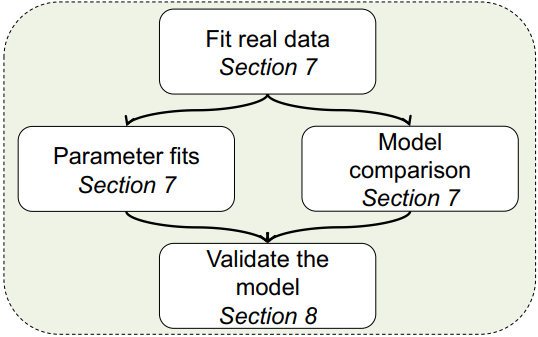
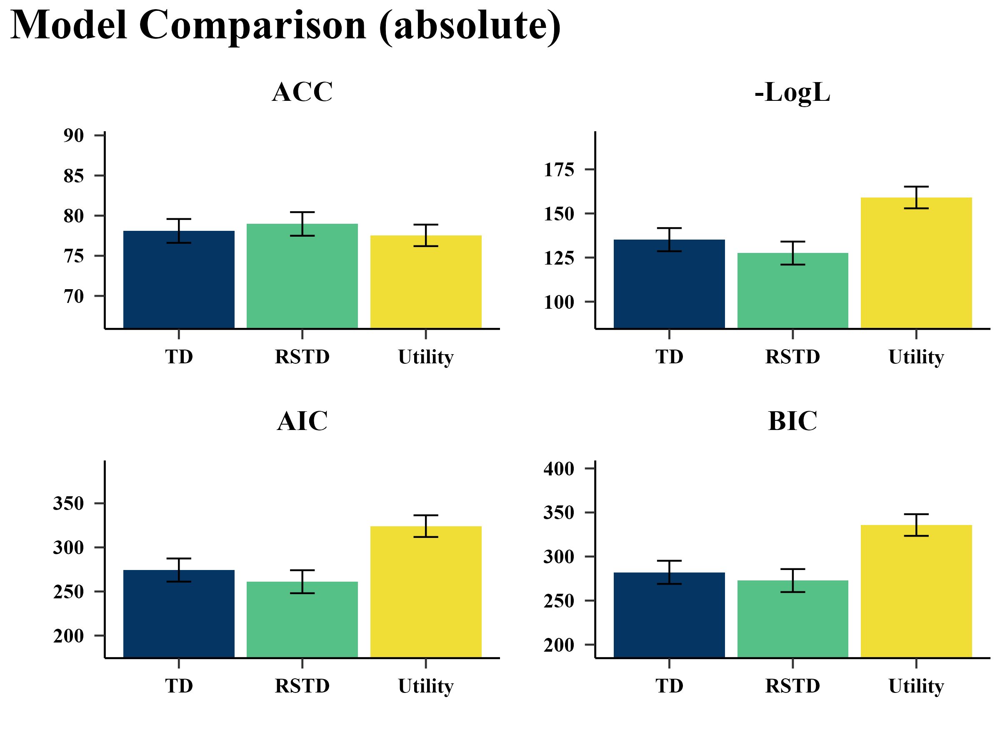
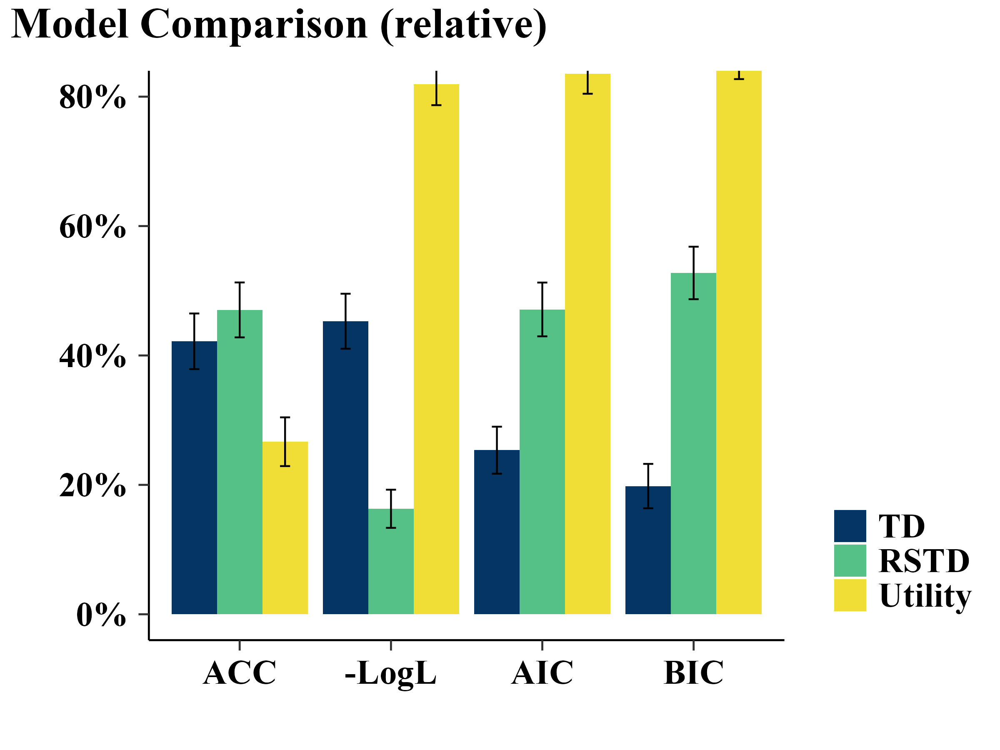

On-Policy
comparison <- binaryRL::fit_p(
policy = "on",
data = binaryRL::Mason_2024_G2,
model_name = c("TD", "RSTD", "Utility"),
fit_model = list(binaryRL::TD, binaryRL::RSTD, binaryRL::Utility),
lower = list(c(0, 0), c(0, 0, 0), c(0, 0, 0)),
upper = list(c(1, 10), c(1, 1, 10), c(1, 1, 10)),
iteration_i = 100,
nc = 10,
algorithm = c("NLOPT_GN_MLSL", "NLOPT_LN_BOBYQA")
)
result <- dplyr::bind_rows(comparison)
write.csv(result, "../OUTPUT/result_comparison_on.csv", row.names = FALSE)Plot
Read Result
data <- read.csv("../OUTPUT/result_comparison_on.csv") %>%
dplyr::select(-dplyr::starts_with("param_")) %>%
tidyr::pivot_longer(
cols = c(ACC, LogL, AIC, BIC),
names_to = "metric",
values_to = "value"
) %>%
dplyr::group_by(Subject, metric) %>%
dplyr::mutate(
value_norm = (value - min(value)) / (max(value) - min(value) + 1e-10),
fit_model = factor(
fit_model,
levels = c("TD", "RSTD", "Utility")
),
metric = factor(
metric,
levels = c('ACC', 'LogL', 'AIC', 'BIC'),
labels = c('ACC', '-LogL', 'AIC', 'BIC')
)
) %>%
dplyr::ungroup() %>%
dplyr::arrange(Subject, fit_model)Absolute
Plot Code
plots <- data %>%
split(.$metric) %>%
purrr::map(~{
ggplot2::ggplot(.x, ggplot2::aes(x = fit_model, y = value, fill = fit_model)) +
ggplot2::geom_bar(stat = "summary", fun = "mean", position = "dodge") +
ggplot2::geom_errorbar(
stat = "summary", fun.data = "mean_se",
position = ggplot2::position_dodge(width = 0.9), width = 0.2
) +
ggplot2::scale_fill_manual(values = c("#053562", "#55c186", "#f0de36")) +
ggplot2::labs(x = "", y = "", title = .x$metric[1]) +
ggplot2::coord_cartesian(
ylim = c(
mean(.x$value) - 0.7*sd(.x$value),
mean(.x$value) + 0.7*sd(.x$value))
) +
papaja::theme_apa() +
ggplot2::theme(
legend.position = "none",
plot.margin = margin(t = 0, r = 0, b = 0, l = 0),
text = element_text(family = "serif", face = "bold", size = 15),
axis.text = element_text(
color = "black", family = "serif", face = "bold", size = 12
),
)
})
plot <- patchwork::wrap_plots(plots, ncol = 2) +
patchwork::plot_annotation(
title = "Model Comparison (absolute)",
theme = ggplot2::theme(
plot.title = ggplot2::element_text(
family = "serif", face = "bold",
size = 25, hjust = 0, margin = ggplot2::margin(b = 20)
)
)
)
rm(plots)
ggplot2::ggsave(
plot = plot,
filename = "../FIGURE/model_comparison(abs).png",
width = 8, height = 6
)
plot

Relative
Plot Code
plot <- ggplot2::ggplot(data, aes(x = metric, y = value_norm, fill = fit_model)) +
ggplot2::geom_bar(stat = "summary", fun = "mean", position = "dodge") +
ggplot2::geom_errorbar(
stat = "summary", fun.data = "mean_se",
position = position_dodge(width = 0.9), width = 0.2
) +
ggplot2::labs(x = "", y = "", fill = "Model") +
ggplot2::ggtitle("Model Comparison (relative)") +
ggplot2::scale_fill_manual(values = c("#053562", "#55c186", "#f0de36")) +
ggplot2::coord_cartesian(ylim = c(0, 1)) +
ggplot2::scale_y_continuous(labels = scales::percent) +
papaja::theme_apa() +
ggplot2::theme(
plot.margin = margin(t = 5, r = 0, b = 0, l = 0),
plot.title = element_text(
family = "serif", face = "bold",
size = 25, hjust = -1.4
),
legend.title = element_blank(),
legend.position.inside = c(0.8, 0.75),
legend.justification = c(0, 0),
text = element_text(
family = "serif",
face = "bold",
size = 25
),
axis.text = element_text(
color = "black",
family = "serif",
face = "bold",
size = 20
),
)
ggplot2::ggsave(
plot = plot,
filename = "../FIGURE/model_comparison(rel).png",
width = 8, height = 6
)
plot

Off-Policy
comparison <- binaryRL::fit_p(
policy = "off",
data = binaryRL::Mason_2024_G2,
model_name = c("TD", "RSTD", "Utility"),
fit_model = list(binaryRL::TD, binaryRL::RSTD, binaryRL::Utility),
lower = list(c(0, 0), c(0, 0, 0), c(0, 0, 0)),
upper = list(c(1, 10), c(1, 1, 10), c(1, 1, 10)),
iteration_i = 100,
nc = 10,
algorithm = c("NLOPT_GN_MLSL", "NLOPT_LN_BOBYQA")
)
result <- dplyr::bind_rows(comparison)
write.csv(result, "../OUTPUT/result_comparison_off.csv", row.names = FALSE)Plot
Read Result
data <- read.csv("../OUTPUT/result_comparison_off.csv") %>%
dplyr::select(-dplyr::starts_with("param_")) %>%
tidyr::pivot_longer(
cols = c(ACC, LogL, AIC, BIC),
names_to = "metric",
values_to = "value"
) %>%
dplyr::group_by(Subject, metric) %>%
dplyr::mutate(
value_norm = (value - min(value)) / (max(value) - min(value) + 1e-10),
fit_model = factor(
fit_model,
levels = c("TD", "RSTD", "Utility")
),
metric = factor(
metric,
levels = c('ACC', 'LogL', 'AIC', 'BIC'),
labels = c('ACC', '-LogL', 'AIC', 'BIC')
)
) %>%
dplyr::ungroup() %>%
dplyr::arrange(Subject, fit_model)